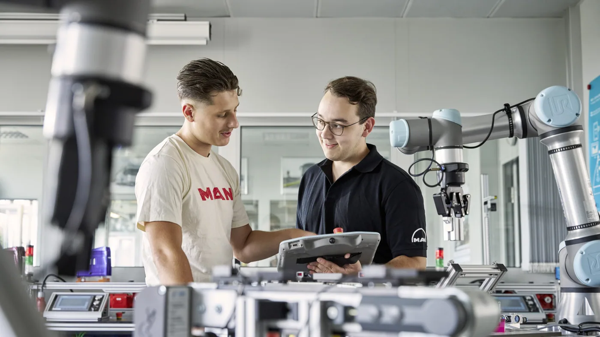

MAN Truck & Bus anunció el 28 de agosto de 2026 una nueva incorporación de 504 aprendices y estudiantes de programas duales en Alemania. El inicio del ciclo comprende actividades de agosto y septiembre en plantas y en la organización de servicios de la compañía. Entre todos los años de cursada, MAN informa alrededor de 1.600 personas en formación.
La empresa destaca áreas como tecnología de fabricación, automatización y electromovilidad. También comunica que cubrió todas las plazas del ciclo. Es una noticia de desarrollo industrial y de personal: no una convocatoria argentina ni la promesa de que cualquier interesado pueda inscribirse ahora.
El anuncio pone el foco en una parte menos visible de la evolución del camión. Junto a motores y sistemas electrónicos, hacen falta personas capaces de producir, verificar, mantener y explicar lo que ocurre con cada vehículo.
La herramienta no reemplaza al conocimiento
Análisis de Zabala Repuestos. Un taller puede adquirir equipos de diagnóstico y seguir necesitando un método para interpretar sus resultados. Tener acceso a una pantalla no determina qué comprobación corresponde, qué información falta o cuándo una conclusión todavía es provisional.
La formación resulta útil cuando enseña a relacionar síntomas, antecedentes y documentación. También debe incluir cómo dejar registro de lo realizado. La calidad del servicio depende tanto de resolver una tarea como de que otra persona pueda entender después qué se encontró y cómo se verificó.
Aprender sin saltear la supervisión
Una incorporación gradual permite asignar responsabilidades de acuerdo con la preparación de cada persona. Antes de pedir autonomía conviene definir qué tareas puede realizar, cuáles requieren acompañamiento y quién confirma que el procedimiento se cumplió correctamente.
No alcanza con observar una intervención una vez. Un plan de aprendizaje necesita práctica, devolución y criterios claros para evaluar avances. Para una empresa pequeña, esa organización puede ser sencilla: una lista de competencias y un responsable de seguimiento suelen aportar más claridad que instrucciones transmitidas de memoria.

Una competencia importante: identificar la unidad
En repuestos, la consulta comienza por saber exactamente qué vehículo se está atendiendo. Chasis, versión y referencia de la pieza evitan que una suposición se convierta en un pedido equivocado. Enseñar ese paso desde el comienzo protege el tiempo del taller y del cliente.
También importa distinguir lo confirmado de lo pendiente. Si todavía no se verificó una compatibilidad, corresponde dejarlo claro antes de avanzar. La experiencia profesional no consiste en responder siempre de inmediato, sino en saber qué datos permiten dar una respuesta confiable.
Producción y posventa necesitan comunicarse
Una intervención puede involucrar recepción, diagnóstico, provisión de materiales, ejecución y entrega. Si cada etapa conserva la información por separado, el cliente puede recibir explicaciones diferentes sobre el mismo problema. La capacitación debe contemplar ese recorrido completo.
Un registro compartido ayuda a reducir pérdidas de información: motivo de ingreso, hallazgos, autorización, piezas y controles finales. No implica burocratizar cada tarea. Se trata de conservar lo necesario para continuar el trabajo y evitar repetir preguntas o comprobaciones que ya se realizaron.
Qué puede tomar un taller argentino de esta noticia
El tamaño de MAN no es una condición para organizar mejor el aprendizaje. Un taller local puede comenzar identificando sus tareas más frecuentes, los errores que más tiempo consumen y las consultas que dependen siempre de una sola persona. Ese mapa permite priorizar contenidos útiles.
Luego conviene elegir un responsable, reservar momentos para enseñar y comprobar resultados. La formación no debería depender únicamente de que aparezca tiempo libre. Cuando el objetivo queda definido, es más fácil integrarla al trabajo sin convertir cada servicio en una improvisación.
Indicadores sencillos para evaluar el avance
- Consultas que llegan con la identificación completa del vehículo.
- Órdenes de trabajo con antecedentes y controles registrados.
- Disminución de pedidos incorrectos o de información faltante.
- Tareas que pueden realizarse con la supervisión acordada.
- Capacidad para explicar el diagnóstico y sus límites.
- Cumplimiento de procedimientos de seguridad del fabricante.
La disponibilidad se construye antes de la avería
Desarrollar personal no garantiza por sí solo una reparación más rápida, pero crea condiciones para trabajar con mayor orden. La experiencia se aprovecha mejor cuando puede transmitirse y cuando los procesos no dependen de una única persona.
La novedad de esta semana recuerda que la industria no se transforma solamente con productos. También necesita preparar a quienes los sostendrán durante años. Para transportistas y talleres argentinos, esa es una idea concreta: invertir en conocimiento forma parte del respaldo que necesita cada camión.